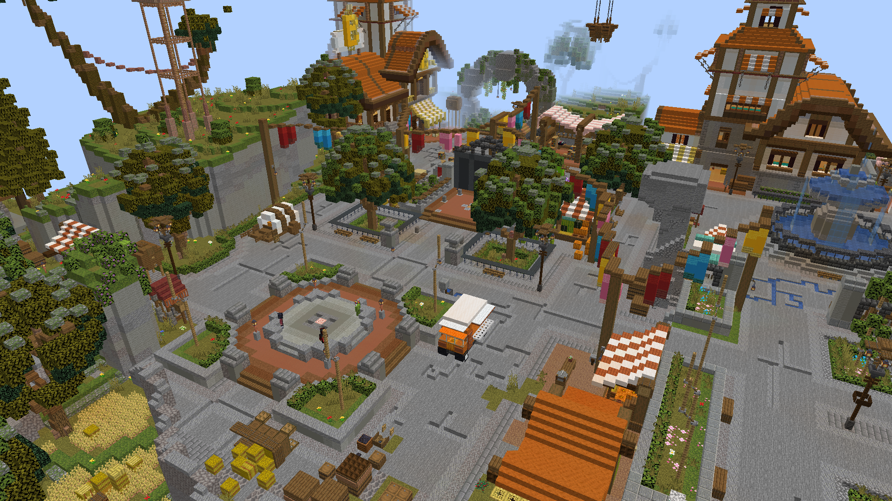
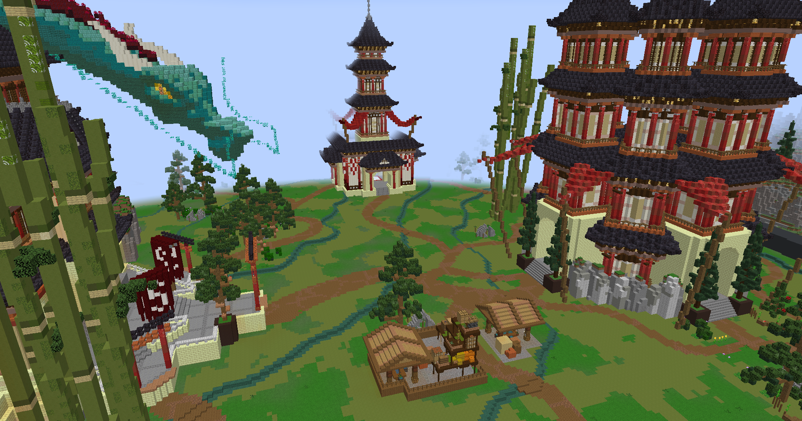
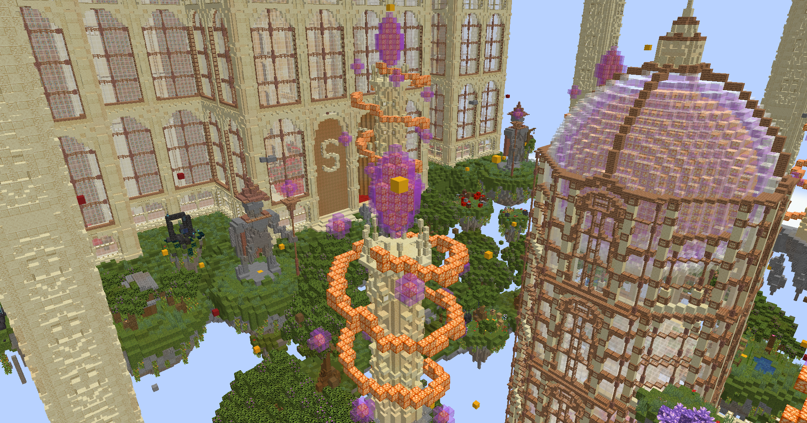
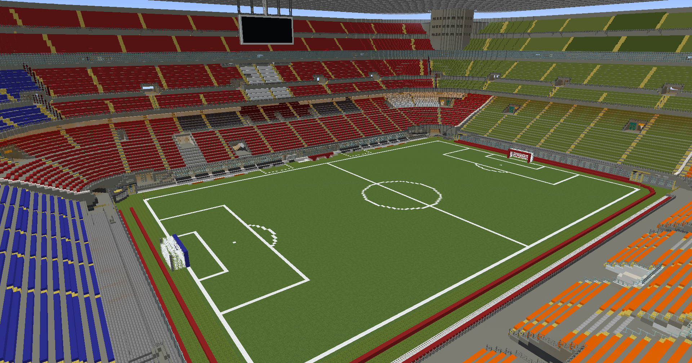

Egyedi fejlesztésű játékmódok, saját kliens, saját anticheat - fedezd fel a Solaryn Networköt a magyar közösséggel együtt.
Egyedi játékmód
Ingyenesen játszható
Aktív staff csapat
A Solaryn Network nem csak egy szerver, hanem egy közösség. Célunk a legstabilabb és legélvezetesebb magyar Minecraft környezet megteremtése - egyedi, saját fejlesztésű játékmódokkal, egy kifejezetten erre a hálózatra épített kliensprogrammal, és egy csapat mögötte, akiknek fontos, hogy jól érezd magad nálunk.
Négy teljesen egyedi világ, egy hálózaton belül.

A Kingdoms egy közösségi túlélő játékmód, ahol nem egyedül, hanem egy egész királyság élén küzdesz a fejlődésért. Alapíts vagy csatlakozz egy királysághoz, oszd ki a rangokat (vezér, al-vezér, tag), és építsétek fel közösen a birodalmatokat a nulláról. Kereskedj a piacon a többi királysággal, szövetkezz az erősebb ellenfelek ellen, vagy vívjátok ki a magatok helyét a szerver legerősebb birodalmai között - minden csata, minden gyilkosság a királyságotok presztízsét és ranglista-helyezését mozgatja.

A Momentum PvP Magyarország egyik legegyedibb, mozgás-alapú harci játékmódja - itt nem csak a kardforgatás, hanem a taktikai mozgás dönt a csatákban. Válassz egyet a különböző kasztok (kitek) közül: mindegyiknek saját aktív és passzív képessége van. Robbanj előre Sebességlökettel, tűnj el Láthatatlansággal, zúzz nagyobbat Erőlöket alatt, védd magad Védelmi löketttel, törj az égbe Égbetöréssel, vagy csapj le egy Üstökös-zuhanással és rázd meg a csatateret egy Lökéshullámmal. A passzív képességek - Falfutás, Ugrásnövelés, Elnyelő pajzs, Kombó-roham és társaik - tovább mélyítik a harcstílusokat: minden kit egy teljesen más játékstílust nyit meg.

Az Elyvientrum egy teljes értékű RPG-élmény a Solaryn hálózaton belül: küzdj végig egyedi dungeonökön, teljesíts questeket, és fejleszd tovább a kasztodat egyre erősebb varázslatokkal. A rendszer középpontjában a mana áll - minden varázslat, minden képesség ennek gazdálkodásán múlik, úgyhogy a taktikus manahasználat legalább annyira számít, mint a nyers erő. Küzdj meg a dungeonök végén várakozó bossokkal egyedül vagy csapatban, majd, ha inkább embert próbálnál, állj ki más játékosok ellen is - az Elyvientrumban a PvE és a PvP karöltve létezik.

A Foci a Solaryn saját, Minecraftra épített csapatsport-élménye: két csapat, egy pálya, és egy igazi, fizikailag szimulált labda. Minden meccsen kapsz egy speciális Gyorsulás-képességet (rövid visszatöltési idővel), amivel az utolsó pillanatban előzheted meg az ellenfeled, vagy érhetsz be a labdához időben. A meccsek automatikusan rögzítik a statisztikáidat - góljaidat, meccseidet, győzelmeidet -, az eredmények pedig kikerülnek a Discord szerverünkre is, hogy mindenki lássa, ki a hét gólkirálya.
A Solaryn hálózatra kizárólag a saját, hivatalos launcherünkön keresztül lehet csatlakozni - más kliensről (pl. vanilla, Lunar, Badlion, FyreMC) a szerver nem fogad kapcsolatot. Ez biztosítja az egységes anticheat-védelmet és az egyedi funkciókat mindenki számára.
Solaryn Launcher letöltése (Windows)A Solaryn Network mögött álló tulajdonosok.
Töltsd le a hivatalos Solaryn Launchert (lásd fentebb), telepítsd, majd jelentkezz be a Solaryn-fiókoddal - ha még nincs, a launcherben vagy a SolarCenterben ingyenesen regisztrálhatsz egyet. Ezután csak nyomd meg a "Játék indítása" gombot - a launcher mindent automatikusan letölt és beállít, nincs szükség kézi IP-beírásra vagy modtelepítésre.
Nem. A Solarynra kizárólag a saját, hivatalos kliensünkön (SolarClient) és launcherünkön keresztül lehet csatlakozni - ezt technikailag is kikényszerítjük. Más kliensről (bármelyikről) a szerver nem enged be.
Ez biztosítja az egységes anticheat-védelmet és a kiegyensúlyozott, csalásmentes játékmenetet mindenki számára, emellett a kliensünk olyan egyedi funkciókat is tartalmaz (barátlista, jelvények, beépített teljesítmény-optimalizáció), amik más klienssel nem lennének elérhetők.
A launcher automatikusan telepíti a megfelelő Minecraft-verziót és a szükséges modokat - neked csak egy Solaryn-fiókra van szükséged, amit ingyenesen regisztrálhatsz a launcherben vagy a SolarCenterben.
Igen, a Solaryn teljesen ingyenesen játszható, és nem pay2win: a webshopon opcionálisan vásárolhatsz rangokat, kozmetikákat és PrémiumPontot, de ezek csak kényelmi/kozmetikai előnyök - érvényesülni fizetés nélkül, tiszta játékkal is lehet.
Ellenőrizd, hogy a launcher legfrissebb verzióját használod-e, indítsd újra, és győződj meg róla, hogy stabil az internetkapcsolatod. Ha ez nem segít, keress minket a Discord szerverünkön.
A tagfelvétel időszakos, ezeket mindig a Discord szerverünkön hirdetjük meg - érdemes ott figyelni a bejelentéseket.
A SolarCenter felületén - ott találod a rangodat, PrémiumPont-egyenlegedet, játékidődet, barátaidat és jelvényeidet is, egy helyen.